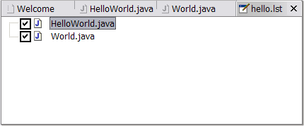
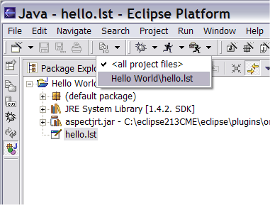

Copyright © 2004 Eclipse.org.
All Rights Reserved
Using Build Configurations
By default
AJDT will always build all the files in your project. You can create additional
custom build configurations that include or exclude certain files from the
build. From the File menu select new, and then Other… -> AspectJ -> Build
Configuration File.

Press next,
and give your new configuration a name (e.g. “hello.lst”). Click finish. The
build configuration editor opens on your new build configuration.

For this
example, lets exclude the World aspect from the build. Deselect “World.java”
and save the file. (Once you have closed the build configuration editor, you
can open it again at any time by double-clicking the ”.lst” file in the Package
Explorer.
In the
Package Explorer, select “hello.lst” and right-click to bring up the context
menu. Select “Select this build config.”
The project builds using the new configuration – if you run the project
you should see the “Hello” output to the console, but not “Hello to you too…”.
This build configuration will be remembered as the current build configuration
for the project and will be used for all subsequent builds until you select an
alternate file. (Select “default.lst’ to go back to building with all files).
The drop-down next to the build icon in the toolbar also allows you to select
from amongst the available build configurations for a project.
